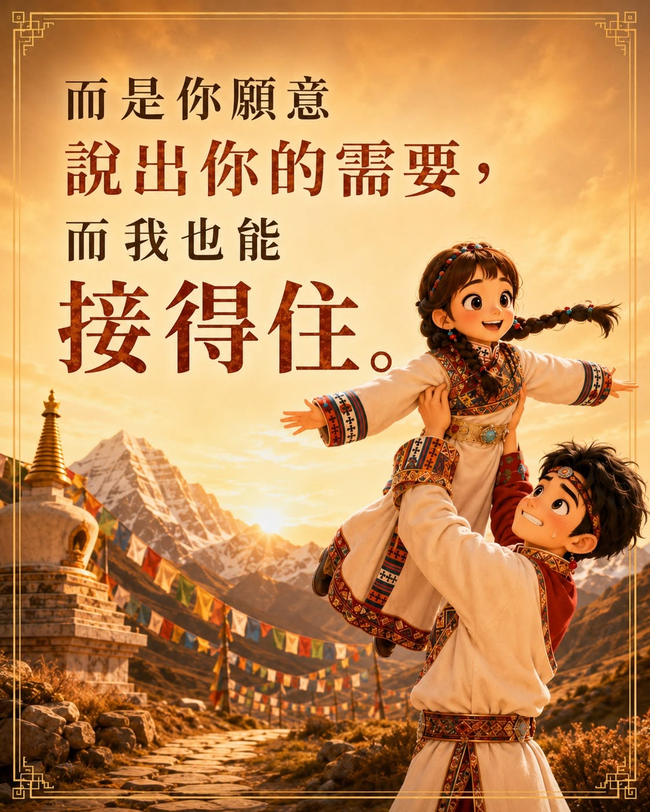

第一次一起踏上的朝聖之旅
這次的西藏轉山之旅，對我們來說特別珍貴。
因為，這是我們夫妻第一次一起踏上的朝聖之旅。
一路上，我們看見了西藏壯闊的風景，也看見了彼此最真實的樣子。
有相互扶持的時候，當然也有爭吵、摩擦與衝突。
旅途讓感受清楚浮現
旅行沒有讓所有問題消失，反而讓一些平常沒有說清楚的感受，更清楚地浮現出來。
我們也因此開始練習，怎麼更如實地表達自己，怎麼理解對方真正的需要，又怎麼在情緒升起時，依然願意留在彼此的關係裡。
幸福，是願意說出需要
我慢慢明白——
幸福，不是我一直猜你的心；
而是你願意說出你的需要，而我也能接得住。
而是你願意說出你的需要，而我也能接得住。
這趟旅程也讓我們看見，當我在的時候，有些事情，她可以不用擔心；當她在的時候，也有些事情，我可以安心放下。
兩個人都不容易的時候
但伴侶關係真正的考驗，或許不是「誰照顧誰」，而是當我們兩個人都累了、都有情緒、都有自己的難處時，我們是否仍願意站在一起，共同面對眼前的事。

走進彼此的心
轉山，走的不只是一條朝聖的路，也像是走進彼此的心。
我們沒有因此變成不爭吵的夫妻，卻在一次次碰撞之後，更了解彼此，也更知道該如何靠近。
接下來，我們想把這些發生在旅途中的故事與覺察，一篇一篇、慢慢地說出來。
也感謝有 AI，讓我能把這些感受做成圖卡，留下我們在這段旅程裡看見的自己。
邀請你慢慢看、慢慢感受。
也許在我們的故事裡，你也會重新看見自己的伴侶關係，並開始思考覺察：
邀請你問問自己
我是否願意說出真正的需要？
當對方低潮時，我是否接得住？
而當兩個人都不容易時，我們是否還願意一起面對？
當對方低潮時，我是否接得住？
而當兩個人都不容易時，我們是否還願意一起面對？
願我們都能在關係裡，
不只期待被懂，也學會表達；
不只渴望被愛，也慢慢成為接得住愛的人。
不只期待被懂，也學會表達；
不只渴望被愛，也慢慢成為接得住愛的人。